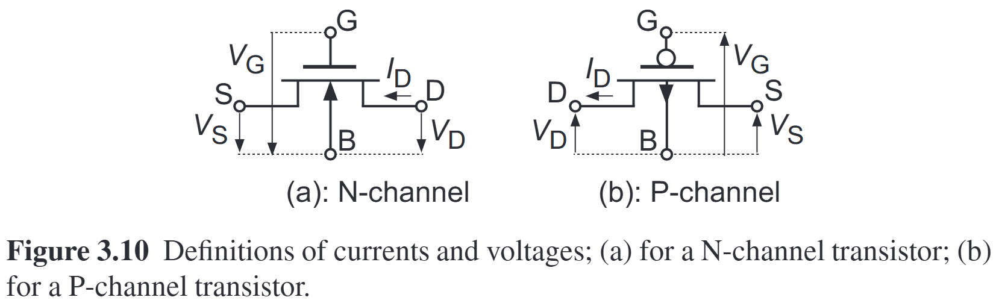

08 Feb 2025
circuits

\begin{aligned}
I_d &= I_F - I_R\\
I_{F} &= I_{spec} \left[ \ln\left(1+\exp\dfrac{V_g - V_{T0} - nV_{s}}{2nU_T}\right) \right]^2\\
I_{R} &= I_{spec} \left[ \ln\left(1+\exp\dfrac{V_g - V_{T0} - nV_{d}}{2nU_T}\right) \right]^2\\
I_{spec} &= 2n\mu C_{ox} \dfrac{W}{L}U_T^2\\
\delta I_d &= - G_{ms} \delta V_s + G_{md} \delta V_{d} + G_m \delta V_g
\end{aligned}
\begin{aligned}
G_{ms} &= \dfrac{\sqrt{I_F I_{spec}}}{U_T} \left(1-e^{-\sqrt{I_{F}/I_{spec}}}\right)\\
&=\begin{cases}
\beta (V_g - V_{T0}-nV_{s}) = \dfrac{I_F I_{spec}}{U_T}, \quad \text{ for strong inversion}\\
I_F/U_T, \quad \text{ for weak inversion}
\end{cases}
\end{aligned}
\begin{aligned}
G_{ms} &= - \dfrac{d I_d}{d V_s} = -\dfrac{d I_F}{d V_s}
\end{aligned}
\begin{aligned}
- 2 I_{spec} \left[ \ln\left(1+\exp\dfrac{V_g - V_{T0} - nV_{s}}{2nU_T}\right) \right] \cdot \dfrac{1}{1+\exp\dfrac{V_g-V_{T0}-nV_s}{2nU_T}} \cdot \dfrac{-n}{2nU_T} \exp\dfrac{V_g-V_{T0}-nV_s}{2nU_T}
\end{aligned}
\begin{aligned}
\exp\dfrac{V_g-V_{T0}-nV_s}{2nU_T} = \exp\left[\ln\left(1+\exp\dfrac{V_g-V_{T0}-nV_s}{2nU_T}\right)\right]-1 =e^{\sqrt{I_F/I_{spec}}}-1
\end{aligned}
\begin{aligned}
I_{spec} \left[ \ln\left(1+\exp\dfrac{V_g - V_{T0} - nV_{s}}{2nU_T}\right) \right] \cdot \dfrac{e^{\sqrt{I_F/I_{spec}}}-1}{e^{\sqrt{I_F/I_{spec}}}} \cdot \dfrac{1}{U_T}
\end{aligned}
\begin{aligned}
G_{ms} &= \dfrac{\sqrt{I_F I_{spec}}}{U_T} \left(1-e^{-\sqrt{I_{F}/I_{spec}}}\right)
\end{aligned}
\begin{aligned}
G_{md} &= \dfrac{\sqrt{I_R I_{spec}}}{U_T} \left(1-e^{-\sqrt{I_{R}/I_{spec}}}\right)
\end{aligned}
\begin{aligned}
G_{m} &= \dfrac{d I_d}{d V_g} = \dfrac{G_{ms}-G_{md}}{n}\\
&= \begin{cases}
, \quad \text{ for strong inversion}\\
\dfrac{I_d}{n U_T}, \quad \text{ for weak inversion}
\end{cases}
\end{aligned}
to extract \(n\), simulate \(n = \dfrac{1}{(G_m/I_d)U_T}\) in weak inversion.
using `trap` or `traponly` to simulate oscillator, and `traponly` is better.